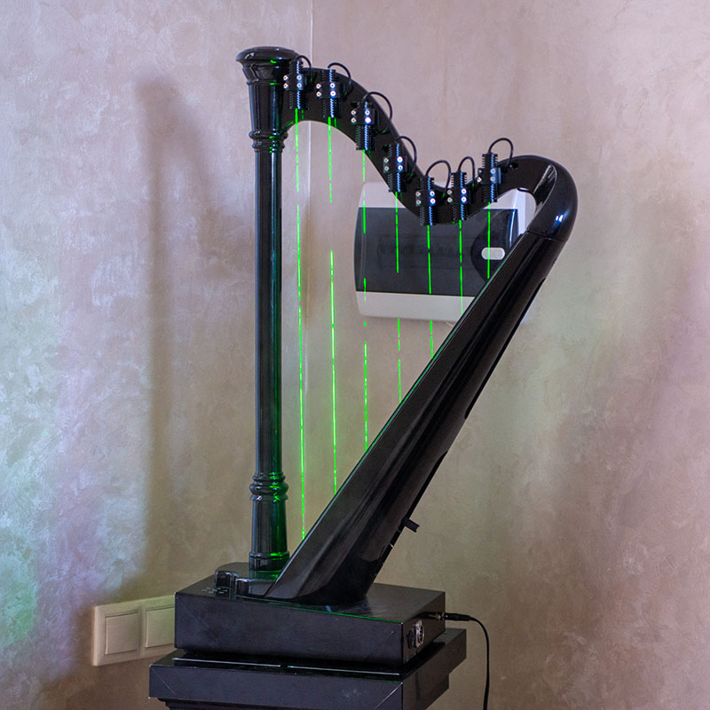
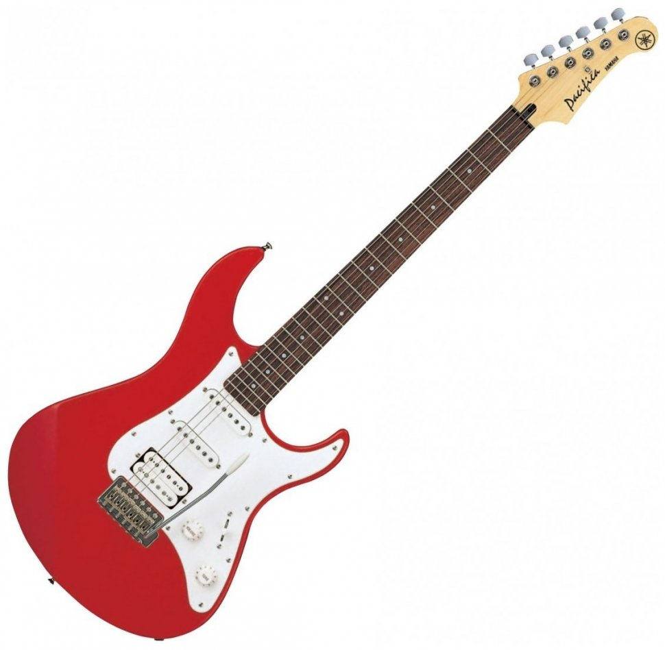
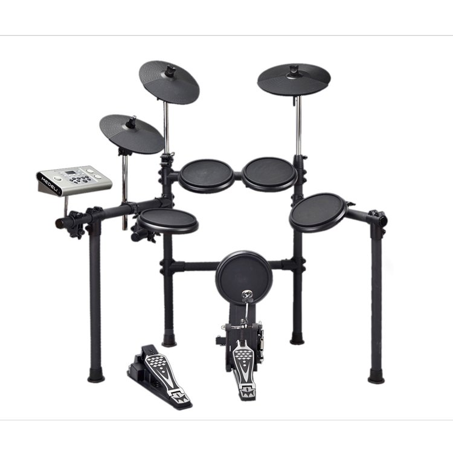
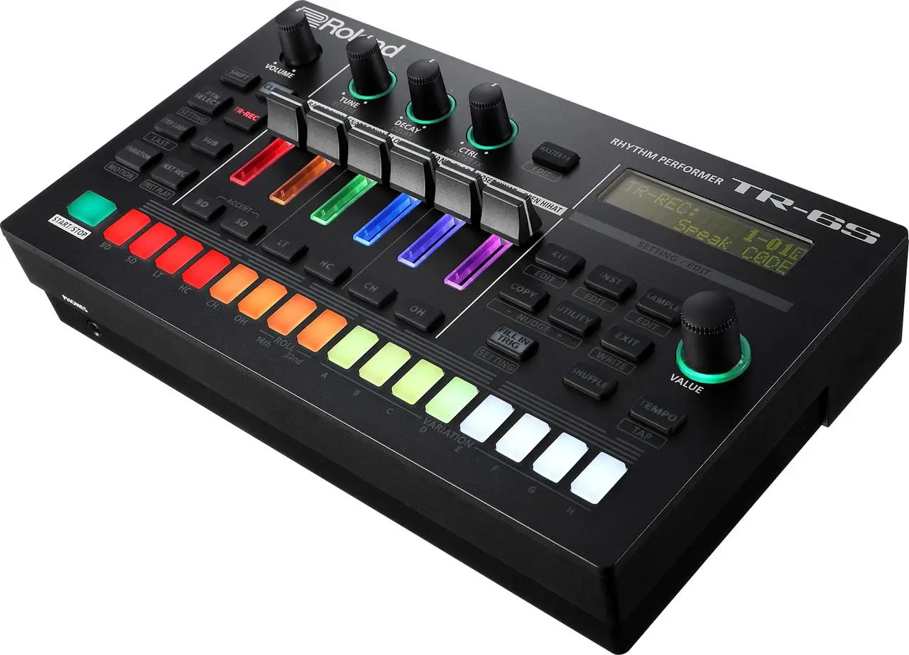

Лазерна арфа — електронний інструмент, у якому замість струн використовуються лазерні промені. При перетині променя рукою звучить певна нота. Часто використовується в шоу завдяки футуристичному вигляду і незвичному звучанню.

Лазерна арфа
Електрогітара — струнний інструмент зі звукознімачами, що звучить через підсилювач. Вона широко застосовується в рок-музиці, джазі й блюзі. Особливість — можливість змінювати звук за допомогою ефектів.

Електронна гітара
Ці барабани імітують акустичні, але працюють через цифрові сенсори. Можна грати в навушниках, вибирати різні звуки та записувати ритми. Зручні для дому, студії та концертів.

Електронні барабани
Драм-машина створює електронні ритми і використовується в попі, хіп-хопі та електронній музиці. Вона забезпечує точний, повторюваний ритм і дозволяє створювати біт без ударних інструментів.
